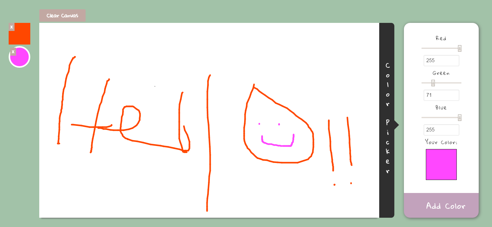
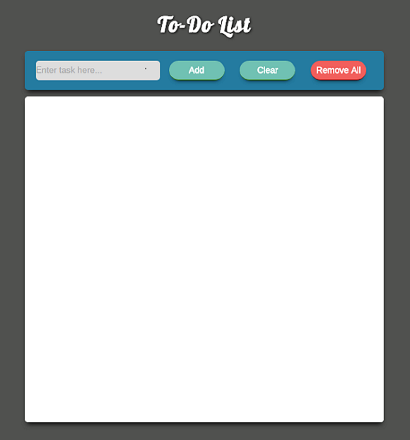
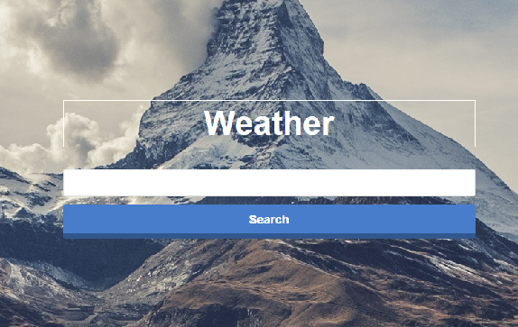
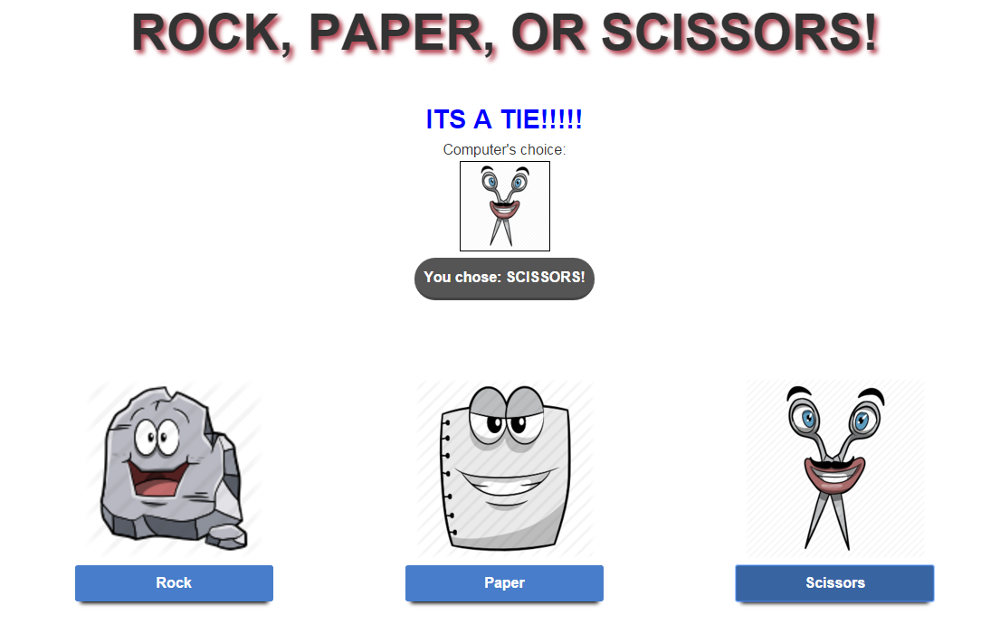

Projects
Drawing Board
My Drawing Board application is by far my favorite project. I decided to kill two birds with one stone and utilize learning jQuery and HTML5 canvas. It taught me a lot about how the Canvas API works, data binding, and I learned that jQuery is a lot nicer when it comes to DOM traversal and manipulation. It is one of my best designed apps as well.
To-Do List
My To-Do List application was my first application. This application is one of my favoirites because it first taught me about DOM manipulation, and how JavaScript manipulates HTML/CSS elements in the browser. This project utilizes HTML5 local storage to store user tasks. This alone taught me about higher-order functions, and callbacks. It also allowed me to develop a small plugin interface for local storage. This project slinghsotted my passion into overdrive.
Weather App
My weather app is an app that utilizes an ajax call to the openweather API. The success function part of the call itself is what allows the user to type in any city or zipcode and retrieve current, up to date, weather information. This project is another one of those big milestones where I further understand how AJAX and JSON work together, what API's are and how they work, and how another part of the JavaScript puzzle fits together.
RPS
My RPS game taught me a lot about what it means when they say: "functions are first class citizens." It gave me a better understanding of taking functions and passing them to other functions. It also helped me get better at calling functions that had parameters. Overall a very fun project.